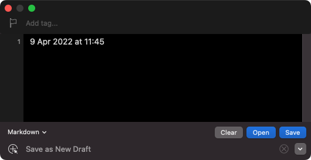

As noted above, you could build your own capture that saves to Drafts with a prefix of the date/time in whatever format you desire.
https://www.icloud.com/shortcuts/40dcacb637f646a8a21496d030a119ec
If you needed to build it out to let you select a draft to append to or tag things specifically, you could.
If you desperately need the functionality that the existing capture window offers and as such need to get the date/time into it in an automated fashion, the it is possible.
If you are unable to use Alfred because you are blocking Drafts for typical use, then you could consider alternative tools. Now, I am assuming that you don’t have TextExpander, aText, Typinator, etc., but if you have Keyboard Maestro or Better Touch Tool for example, both of these support keyword triggers tied to specific apps. And if you are a Mac user who likes customising and automating stuff on your Mac, these are a couple of tools I would jeartily recommend.
I did test writing a snippet workflow in Alfred, but the snippet feature level block list applies to those explicit workflow triggers too, so there’s no way to work around that one without working around it for all snippets through a workflow; which is not an efficient way to do things unless you are just at the stage where you only utilise a handful fo snippets.
Failing the availability of other automation tools capable of utilising snippet/typed triggers, the next option would be to switch the trigger. For example, you could switch to a key combination.
Here’s an example of how you could achieve this in Shortcuts once again.
https://www.icloud.com/shortcuts/dda796c356ce4c3099cf6dda368dd66b
Press the key combination and the text appears like this, but again you can tailor it from the default output format.

You could acheieve the same thing with other tools, but the usual suspects would also allow you to do it with a snippet trigger, so I didn’t think there was any mileage in demonstrating how you could do that.